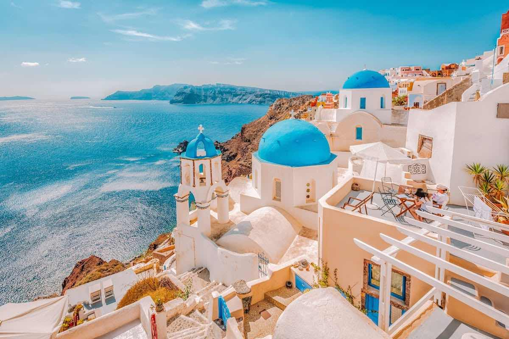

Greece's Jewel of the Aegean
Santorini is one of the crown jewels of the Greek islands, renowned for its breathtaking natural beauty, striking architecture, and rich history. Perched atop dramatic cliffs overlooking the sparkling Aegean Sea, this crescent-shaped island is the remnant of a massive volcanic eruption that occurred in the 16th century BC.
Rate : 8,5/10